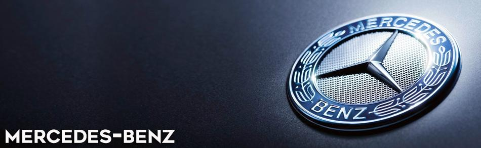
History
Mercedes-Benz traces its origins to Karl Benz's creation of the first internal combustion engine in a car, seen in the Benz Patent Motorwagen – financed by Bertha Benz's dowry and patented in January 1886 – and Gottlieb Daimler and their engineer Wilhelm Maybach's conversion of a stagecoach, with the addition of a petrol engine, introduced later that year.
The Mercedes automobile was first marketed in 1901 by Daimler-Motoren-Gesellschaft .
Emil Jellinek, a European automobile entrepreneur who worked with Daimler Motoren Gesellschaft .registered the trademark in 1902, naming the 1901 Mercedes 35 hp after his daughter Mercedes Jellinek.
Jellinek was a businessman and marketing strategist who promoted "horseless" Daimler automobiles among the highest circles of society in his adopted home.
At the time, it was a meeting place for the "Haute Volée" of France and Europe, especially in winter.
His customers included the Rothschild family and other well-known people. But Jellinek's plans went further, and in as early as 1901, he was selling Mercedes cars in the "New World" as well, including United States billionaires Rockefeller, Astor, Morgan, and Taylor.
At the Nice race he attended in 1899, Jellinek drove under the pseudonym "Monsieur Mercédès" as a way of concealing his less fancy real name.
Many consider that race the time of birth for Mercedes-Benz as a brand. Later, in 1901, the name "Mercedes" was re-registered by DMG worldwide as a protected trademark.The first Mercedes-Benz branded vehicles were produced in 1926, following the merger of Karl Benz's and Gottlieb Daimler's companies into the Daimler-Benz company on 28 June of the same year
Gottlieb Daimler was born on 17 March 1834 in Schorndorf.
After training as a gunsmith and working in France, he attended the Polytechnic School in Stuttgart from 1857 to 1859.
After completing various technical activities in France as well as England, he later started working as a draftsman in Geislingen in 1862.
At the end of 1863 he was appointed workshop inspector at a machine tool factory in Reutlingen, where he met Wilhelm Maybach in 1865
Throughout the 1930s, Mercedes-Benz produced the 770 model, a car that was notably popular throughout Germany's Nazi period.
Adolf Hitler was known to have driven in a model of this car during his time in power, with modified custom bulletproof windshields.
Most of the currently surviving 770 models were sold at auctions to private buyers.
One of the cars is currently on display at the War Museum in Ottawa, Ontario.
The pontiff's Popemobile has often been sourced from Mercedes-Benz.
From 1937 onward, Daimler Benz focused increasingly on military products such as the LG3000 lorry and the DB600 and the DB601 aero engines.
To build the latter, in 1936 it built a factory hidden in the forest at Genshagen around 10 kilometres south of Berlin.
By 1942 the company had mostly stopped producing cars, and was now devoted to war production.
According to its statement, in 1944almost half of its 63,610 employees were forced labourers, prisoners of war or concentration camp detainees.
Another source quotes this figure at 46,000.
The company later paid $12 million in reparations to the labourers' families.
In 1958, the two companies began a partnership to sell their cars in the United States with Studebaker.
A few American-based Daimler-Benz dealerships were converted into Mercedes-Benz dealerships when Daimler's non-Mercedes-partnered company closed in 1966.
Over the decades, Mercedes-Benz has introduced many electronic and mechanical innovations and safety features that later became common.
Currently, Mercedes-Benz is one of the best-known and long-standing automotive brands in the world.
In November 2019, Daimler AG announced that Mercedes-Benz, up until that point a company marque, would be spun off into a separate wholly-owned subsidiary called Mercedes-Benz AG.
The new subsidiary would manage the Mercedes-Benz car and van business. Mercedes-Benz-badged trucks and buses would be part of the Daimler Truck AG subsidiary.
Forinformation relating to the three-pointed star symbol of the brand, see under the title Daimler-Motoren-Gesellschaft, including the merger into Daimler-Benz.
In May 2022, Mercedes-Benz announced that it has recently sold the most expensive car at the price of $142 million.
The car is a very rare 1955 Mercedes-Benz SLR that has been kept in the German automakers collection and bought by a private owner.
Mercedes in an announcement said, thatthe sale will be used to establish the Mercedes-Benz Fund.
In June 2022, Mercedes-Benz recalled almost one million older vehicles built between 2004 and 2015, due to potential problems with their braking system, caused by possible "advanced corrosion"
Mercedes-Benz cars
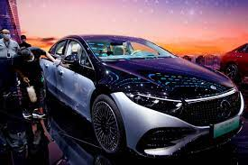
 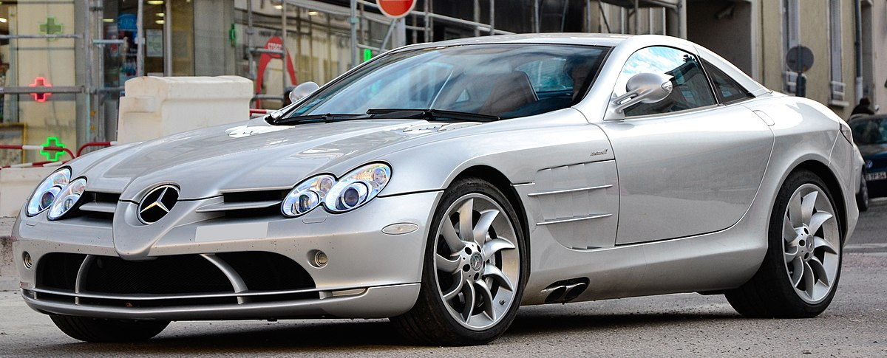
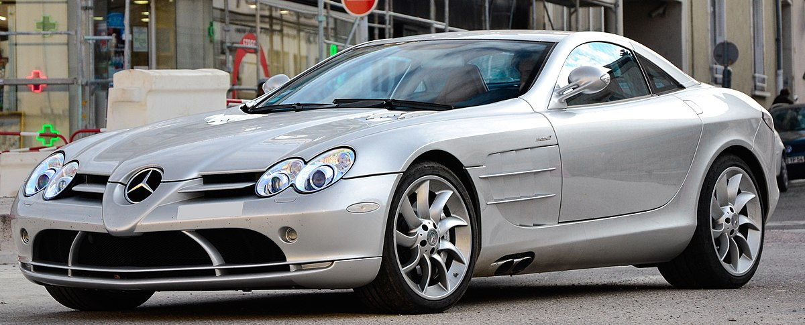
 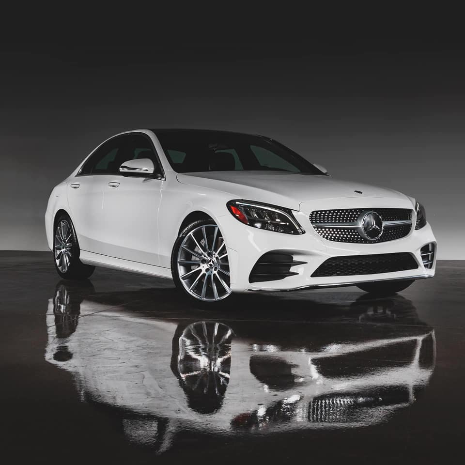
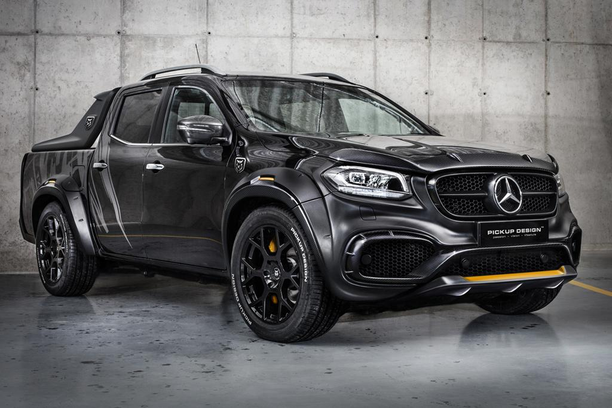
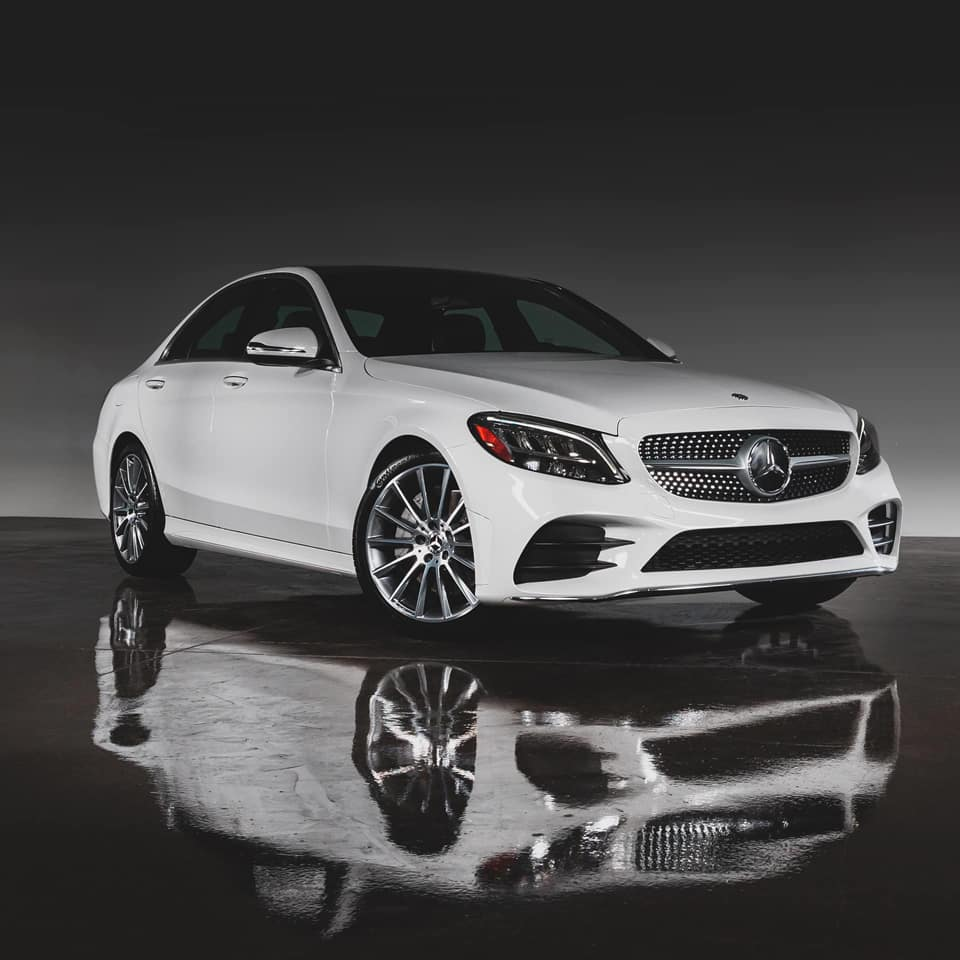
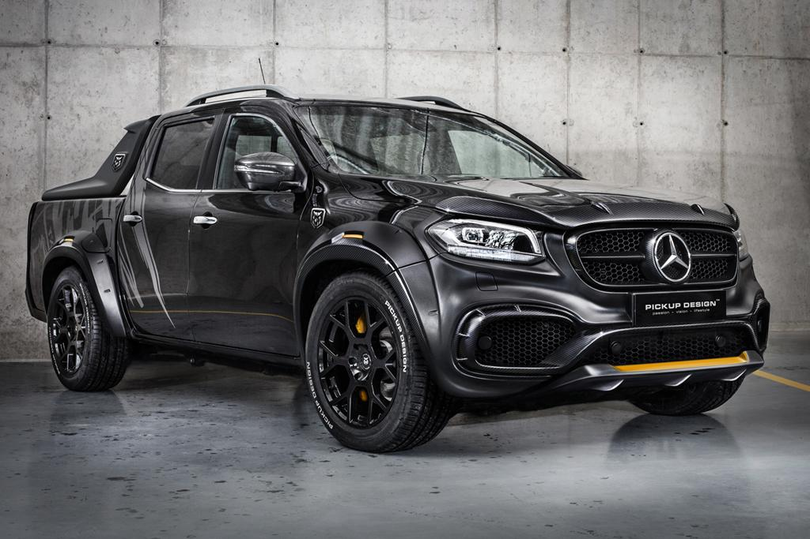
Models
Current model range
Mercedes-Benz offers a versatile range of consumer-passenger, light commercial and heavy commercial equipment.
These vehicles are manufactured in multiple countries worldwide.
The Smart marque of city cars are also produced by Daimler AG.
Models
- A-Class – Subcompact luxury Hatchback and Sedan
- B-Class – Subcompact luxury Multi Purpose Vehicle
- C-Class – Compact executive luxury Sedan/Saloon, Estate, Coupé and Cabriolet
- CLA – Subcompact luxury 4-Door Coupé and Estate
- CLS – Mid-size luxury 4-Door Coupé
- E-Class – Mid-size executive luxury Sedan/Saloon, Estate, Coupé and Cabriolet
- G-Class – Luxury off-road vehicle
- GLA – Subcompact luxury Crossover
- GLB – Compact luxury Crossover
- GLC – Compact luxury Sport utility vehicle
- GLE – Mid-size luxury Sport utility vehicle
- GLK - Compact luxury Sport utility vehicle
- GLS – Full-size luxury Sport utility vehicle
- S-Class – Full-Size luxury Sedan/Saloon, Coupé and Cabriolet
- V-Class – Luxury Multi Purpose Vehicle
- AMG GT – Luxury sports car
- AMG GT 4-Door – Luxury sports 4-Door Coupé
- AMG SL – Luxury grand tourer roadster
- AMG ONE – Super sports car
- EQA - Luxury electric Crossover
- EQB - Luxury electric Crossover
- EQC - Luxury electric Crossover
- EQE - Luxury electric Sedan/Saloon
- EQS - Luxury electric Sedan/Saloon
- EQV - Luxury electric Multi Purpose Vehicle
Vans
 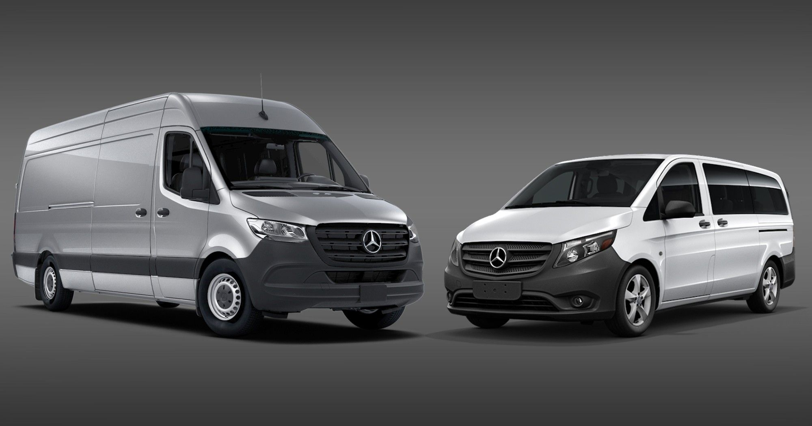
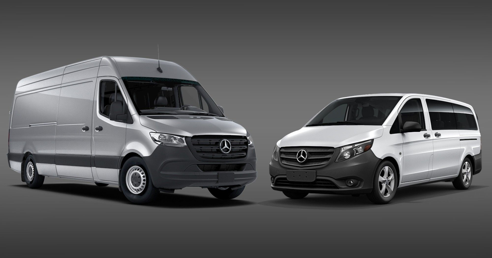

Mercedes-Benz Sprinter
Mercedes-Benz currently offers three types of vans; Citan, Vito, and Sprinter. They are all produced by Daimler AG.
Trucks


Since December 2021, the Mercedes-Benz Trucks division is part of the Daimler Truck company and includes other sub-companies that were part of the DaimlerChrysler merger.
Gottlieb Daimler sold the world's first truck in 1886.[61] Their first factory to be built outside Germany after World War II was in Argentina.
They originally built trucks, many of which were modified by third parties to be used as buses, popularly named Colectivo.
Buses


Mercedes-Benz has been producing buses since 1895 in Mannheim, Germany.
Since 1995, the brands of Mercedes-Benz's buses and coaches are under the umbrella of EvoBus GmbH, since December 2021 belonging to Daimler Truck AG.
EvoBus, through its regional subsidiaries, markets them in European countries, while in other regions of the world marketing and sales duties are passed to regional subsidiaries of Daimler Truck.
Mercedes-Benz produces a wide range of buses and coaches, mainly for Europe and Asia. The first model was produced by Karl Benz in 1895.
Significant models produced
- 1928: SSK racing car
- 1930: 770 "Großer Mercedes" state and ceremonial car
- 1934: 500 K
- 1936: 260 D World's first diesel production car
- 1936: 170
- 1938: W125 Record-breaking experimental
- 1939: 320A
- 1951: 300, known as the "Adenauer Mercedes"
- 1953: "Ponton" models
- 1954: 300SL "Gullwing"
- 1956: 190SL
- 1959: "Fintail" models
- 1960: 220SE Cabriolet
- 1963: 600 "Grand Mercedes"
- 1963: 230SL "Pagoda"
- 1965: S-Class
- 1966: 300SEL 6.3
- 1968: W114 "new generation" compact cars
- 1969: C111 experimental vehicle
- 1972: W107 350SL
- 1974: 450SEL 6.9
- 1977: W123 - Mercedes' first station wagon
- 1978: 300SD - Mercedes' first turbo diesel
- 1979: 500SEL and G-Class
- 1983: 190E 2.3–16
- 1989: 300SL, 500SL
- 1990: 500E
- 1991: 600SEL
- 1993: C-Class
- 1995: C43 AMG
- 1995: SL73 AMG, 7.3 V12
- 1996: SLK
- 1997: A-Class and M-Class
- 2004: SLR McLaren and CLS-Class
- 2007: BlueTec E320, GL320 Bluetec, ML320 Bluetec, R320 Bluetec
- 2010: SLS AMG
- 2013: CLA-Class
- 2016: AMG GT
- 2019: Mercedes-Benz EQ
- 2021: Mercedes-Benz EQA
- 2022: Mercedes-Benz EQS
classic cars
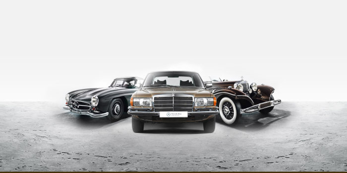
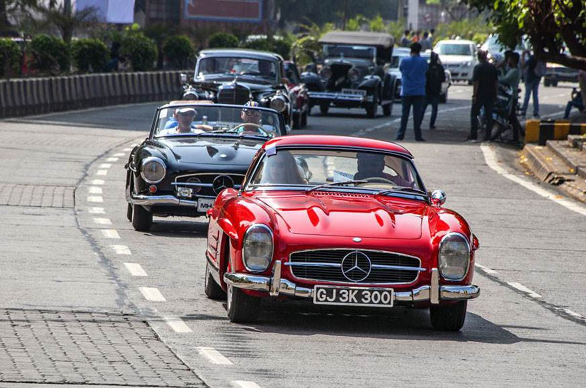
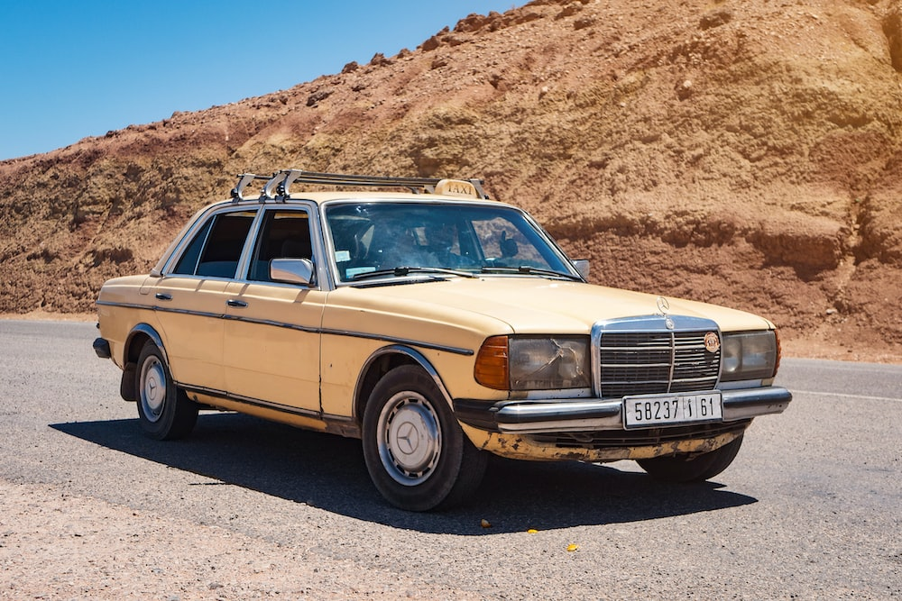
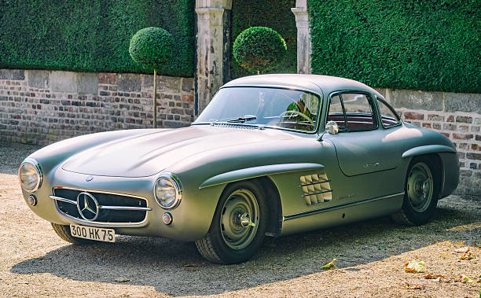
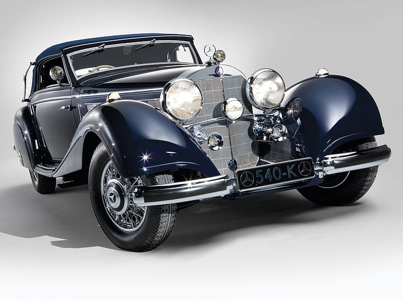
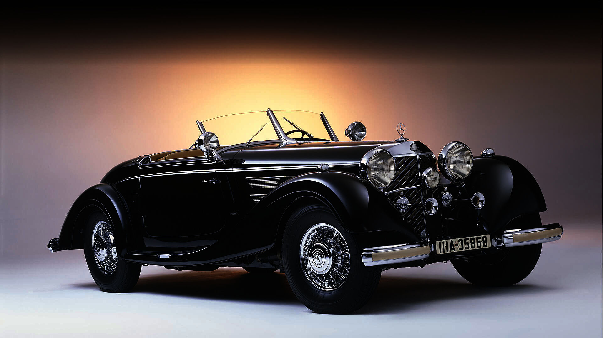
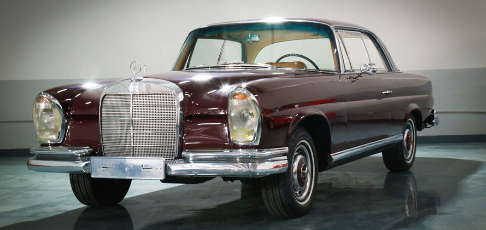
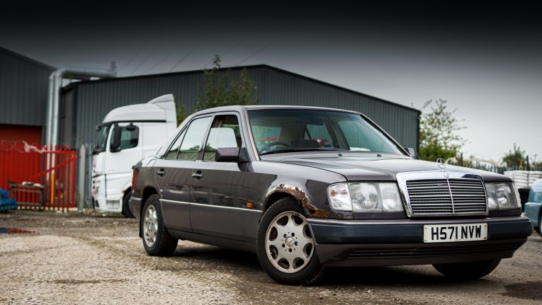